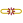

Vazby mezi vrstvami¶
Závislosti mezi datasety často závisí na tom, jak je zřejmá a jak je důležité tuto závislost zdůraznit. Výhodou geodat je možnost zjevné vztahy ponechat zobrazené pouze vykreslením. Pokud to však není dostatečné, tak je možné využít pokročilejší nástroje, které umožní prvky mezi sebou provázat a tyto vztahy i jasně vizualizovat. V prostředí QGIS se za účelem propojování prvků mezi různými datasety používá nástroj s názvem Vztahy (anglicky Relations).
Důležité je uvědomit si, že tento nástroj provede nastavení na základě dat a zapíše ho do projeku.
Vazby lze implementovat i na data bez geometrie.
Typy vazeb¶
U vazeb se rozlišují 3 základní typu vazeb:
- 1 k 1
Jde o vazbu, kdy jeden prvek může být navázán právě na jeden prvek z druhého datasetu. Příkladem může být vztah mezi státem a hlavními městy. Každý stát má právě jedno hlavní město a naopak. Jedná se o nejjednodušší typ vazby.
- 1 k N
Jeden prvek může být navázán na víc prvků z druhého datasetu. Jedná se o nejčastěji používaný typ vazby. Příkladem je kraj a města. Na území jednoho kraje se nachází vícero měst. Jedno město je pouze na území jednoho kraje.
- M ku N
Jedná se o nejsložitější typ vazeb, kdy se jeden prvek váže na více prvků v jednom směru, ale násobná vazba platí i v opačném směru. Jedna řeka protéká vícero okresy. Jedním okresem protéká vícero řek.
Příprava dat¶
Implementace vazeb mezi datasety ja založená na principu propojování prvků pomocí vlastního identifikátoru s identifikátorem z vázaného datasetu. Jako příklad použijeme datasety orp a pozarni_stanice.
Obr. 180 Zobrazení vybraných datasetů.¶
Na obrázku je vidět vzájemné rozložení obou datasetů. Opticky je možné určit příslušnost požárních stanic k jednotlivým ORP. Požadovaným stavem ale je, aby po identifikaci libovolného ORP byly vypsány všechny požární stanice, které se nachází na jeho území.
V atributové tabulce vrstvy je každý prvek označen jednoznačným identifikátorem.
Obr. 181 Atributové tabulky obou datasetů a jejich identifikátory.¶
Klíčovým pro propojení je, aby v jedné z tabulek k vlastnímu identifikátoru přibyl identifikátor vázaného prvku. V tomto případě zvolíme možnost, kdy do vrstvy pozarni_stanice přidáme nový atribut. Ten bude obsahovat identifikátor toho ORP, ve kterém daná požární stanice leží. Tento krok lze provést různými způsoby - od ruční editace až po využití některého z existujících nástrojů.
Jako nejjednodušší postup zvolíme nástroj  Připojit
atributy podle umístění….
Pomocí tohoto nástroje vygenerujeme novou vrstvu z původní vrstvy
pozarni_stanice. Do její atributové tabulky se připojí atributy z
vrstvy ORP na základě použitého geometrického predikátu.
V tomto případě postačuje připojení atributu s identifikátorem orp, další
atributy nejsou potřebné. Vybraným atributům je možné přidat prefix, aby bylo
možné připojené atributy jasně rozeznat.
Další nastavení umožňuje vybrat typ připojení podle typu vazby.
Některé prvky můžou zůstat bez připojení - nemají požadovaný prostorový vztah.
Takovéto prvky můžou být odstraněny.
Přesné nastavení pro ukázkový příklad je na Obr. 182.
Připojit
atributy podle umístění….
Pomocí tohoto nástroje vygenerujeme novou vrstvu z původní vrstvy
pozarni_stanice. Do její atributové tabulky se připojí atributy z
vrstvy ORP na základě použitého geometrického predikátu.
V tomto případě postačuje připojení atributu s identifikátorem orp, další
atributy nejsou potřebné. Vybraným atributům je možné přidat prefix, aby bylo
možné připojené atributy jasně rozeznat.
Další nastavení umožňuje vybrat typ připojení podle typu vazby.
Některé prvky můžou zůstat bez připojení - nemají požadovaný prostorový vztah.
Takovéto prvky můžou být odstraněny.
Přesné nastavení pro ukázkový příklad je na Obr. 182.
Obr. 182 Připojení atributů na základě umístění a atributová tabulka výsledné vrstvy.¶
Nastavení vazby¶
Samotné nastavení vazby je součástí nastavení projektu záložka Vztahy. Sem je nutné zapsat nastavení relace mezi jednotlivými vrstvami. Je důležité, že jeden záznam v tabulce představuje jeden vazební atribut.
Nejdříve přidáme proklik z požární stanice na příslušné ORP. Pomocí tlačítka
 Přidat vztah se otevře dialog pro přidání jednoho
vazebního atributu.
Přidat vztah se otevře dialog pro přidání jednoho
vazebního atributu.
Obr. 183 Nastavení relace z požární stanice na ORP v dialogu a pak ve vlastnostech.¶
Pokud použijeme nástroj identifikace na požární stanici, tak se otevře detail prvku spolu s vazbou na ORP. Přidaný vazební atribut se zobrazuje na poslední pozici (lze změnit) a je možné ho vizualizovat jako formulář nebo jako klasickou atributovou tabulku.
Obr. 184 Detail prvku s vazebním atributem v obou možných variantách.¶
V zobrazení je vidět, že jsou k dispozici i nástroje pro editaci vazeb.
Aktuální nastavení ale neumožňuje zobrazení všech požárních stanic u každého ORP. Je nutné přidat novou položku vztahu.
Obr. 185 Nastavení relace z ORP na požární stanici.¶
Editace vazeb¶
Vazby lze editovat podobně jako klasické atributy. Nástroje pro editaci vazeb jsou zařazeny přímo v detailu prvku, ve vazebním atributu. Základní nástroj editace je přidat vazbu na existující prvek, nebo ji naopak odstranit. Další nástroje slouží na vytváření a mazání prvků s vazbou.
-  Zrušit link na dceřinný prvek
Mezi všemi vazebními prvky je možné označit vybrané vazební prvky. Po nastavení výběru se aktivuje ikonka nástroje pro zrušení vazby. Prvky již nebudou navázané, ale nevymažou se z vrstvy.
 Smazat dceřinný prvek
Smazat dceřinný prvekFunguje podobně jako předchozí nástroj s tím rozdílem, že nejenom zruší vazby, ale i smaže prvek.
{kind=link}
{kind=link}
{kind=link}
{kind=link}
Pozor, všechny úpravy vyžadují editační mód a je nutné změny uložit.
Vazební tabulka¶
Další možností, jak vazby nastavit, je využití samostatné tabulky pro párování prvků. Na ukázku tohoto provázání budeme používat data uložená v databázi. Jedná se opět o ORP a vodni_plochy (pouze ty co mají vložený název). Na obrázku je vidět, že každá vrstva má vlastní identifikátor.
Obr. 186 Identifikátory u obou vrstev uložených v databázi.¶
Nevýhodou použití samostatné vazební tabulky je fakt, že jedna vazba mezi prvkem ORP a vodní plochy se skládá z vazby z OPR na vazební tabulku, a z vazby z vazební tabulky na vodní plochy. Samotné zobrazení v detailu prvku se taky skládá ze dvou částí.
Vazebná tabulka znamená, že vznikne samostatná tabulka, která obsahuje dva atributy. Jeden je identifikátor ORP a druhý je identifikátor vodni_plochy. Každý řádek reprezentuje jednu vazbu mezi dvěma prvky. V našem případě bychom potřebovali takovouto tabulku vytvořit na základě geometrického vztahu mezi jednotlivými prvky.
Nejjednodušší způsob, jak takovouto tabulku vygenerovat, je použít jednoduchý příkaz. Jedná se o způsob, který umožňuje vazby pouze zobrazovat a ne je editovat.
Ukázka jednoduchého příkazu pro vygenerování vazební tabulky.
CREATE TABLE vazby.vazebni_tabulka1 AS
SELECT orp.id AS orp_id
, vn.id AS vn_id
FROM vazby.orp orp
JOIN vazby.vodni_nadrze vn
ON ST_Intersects(orp.geom, vn.geom)
Takto vytvořenou tabulku spolu s ORP vodni_plochy přidáme do mapového okna. V případě vazební tabulky se jedná o vrstvu bez geometrie, tudíž se zobrazuje pouze jako tabulka.
Pro nastavení vazby z ORP na vodní plochu musíme přidat záznamy do nastavení projektu.
přidáme vazbu z ORP (id) na vazební tabulku (orp_id)
přidáme vazbu z vazební tabulky (vn_id) na vodní nádrže (id)
Obr. 187 Nastavení vazby M ku N přes vazební tabulku.¶
V detailu prvku je ale vidět, že první část vazby není vypovídající, protože obsahuje pouze identifikátory. Každá položka se v detailu vykreslí samostatně. Tento způsob nemusí být vhodný pro všechny účely.
Jedním z řešení by mohlo být doplnit vybraný atribut přímo do vazební tabulky.
Obr. 188 Detail prvku s vnořenou vazbou.¶
Pro dokončení by bylo vhodné doplnit vazbu i z vodní nádrže na ORP.
Při ukládání dat v DB je výhodné používat různé nástroje, které ulehčí správu a automatizaci při správě údajů zabezpečujících vazby.